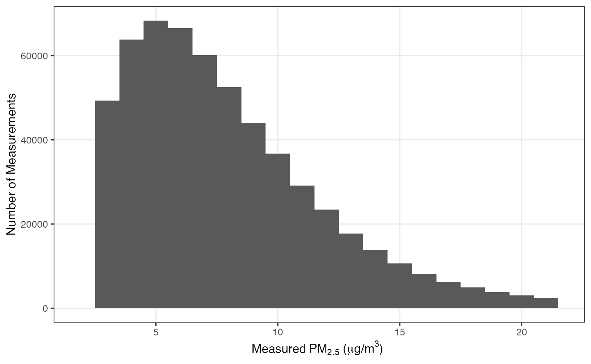

This report evaluates model generation 3. Published v2 results are retained with APPC v2.0.1.
The model generation 3 release pairs this forest with its training dataset, checksums, and model specification. The environmental predictors were generated with geomarker 0.2.0, from release commit 373820d0ab8082f856f7bf0f639f3128111d825a. APPC collects and harmonizes the EPA AQS outcomes.
Training Data
Training data consisted of 618,918 daily average PM concentrations from 786 EPA AQS monitors on 3,468 days between 2017-01-01 and 2026-06-30.
V2 covered the same dates using 611,572 observations at 783 locations. V3 uses refreshed EPA outcomes, including Idaho and North Dakota in the 2026 API refresh. The comparison therefore describes performance over the same period using slightly different evaluation records.
Overall, the median measured PM was 6.9 and 95% of all measurements were between 1.8 and 21.6 :

Model Training
The EPA AQS monitor concentrations were used to train a generalized regression forest with 200 trees, a subsample fraction of 0.5, a minimum node size of 5, and an value of 20.
Model predictors listed in the table below are ordered according to their importance. Here, the variable importance is calculated as an exponentially-weighted sum of how many times each feature was selected within the first 6 splits of each tree in the forest.
| importance | predictor |
|---|---|
| 0.76 | merra_oc |
| 0.08 | merra_bc |
| 0.05 | hpbl |
| 0.03 | plume_smoke |
| 0.02 | x, temperature_max |
| 0.01 | wind_speed, merra_so4 |
| 0.00 | y, doy, year, elevation_median, elevation_sd, temperature_min, precipitation, solar_radiation, wind_direction, specific_humidity, merra_dust, merra_ss |
Leave One Location Out (LOLO) Cross Validated Model Performance
Leave-one-location-out (LOLO) accuracy is calculated by using out of
bag predictions from the trained random forest with resample clustering
by the location. Accuracy is characterized using median absolute error
(mae) and the Spearman’s correlation coefficient
(rho). Accuracy metrics are calculated for each left out
location and then summarized using the median accuracy statistic across
all locations. This most closely captures the performance in a
real-world scenario where we are trying to predict air pollution between
2017 and 2026 in a place where it was not measured.
Each AQS monitor has a different number of measurements depending on
its measurement frequency and when it was deployed. To calculate LOLO
model performance, we exclude any station or station-time grouping that
has 4 or less observations. In the tables below, median_n
represents the median number of observations used in each station
grouping to calculate the overall median accuracy metrics.
ci_coverage is the percentage of the time that the 95% CI
interval of the predicted concentration contained the measured
concentration.
Daily
| mae | rho | ci_coverage | median_n |
|---|---|---|---|
| 1.2 | 0.84 | 69% | 649 |

Daily Prediction Accuracies per Calendar Year
| year | mae | rho | ci_coverage | median_n |
|---|---|---|---|---|
| 2017 | 1.15 | 0.86 | 70% | 117 |
| 2018 | 1.14 | 0.86 | 71% | 117 |
| 2019 | 1.20 | 0.85 | 69% | 116 |
| 2020 | 1.20 | 0.83 | 70% | 115 |
| 2021 | 1.20 | 0.85 | 70% | 116 |
| 2022 | 1.20 | 0.83 | 69% | 117 |
| 2023 | 1.30 | 0.85 | 70% | 116 |
| 2024 | 1.20 | 0.83 | 69% | 117 |
| 2025 | 1.20 | 0.86 | 69% | 118 |
| 2026 | 1.20 | 0.83 | 70% | 57 |
Monthly
Exclude stations with 4 or less total monthly observations.
| mae | rho | ci_coverage | median_n |
|---|---|---|---|
| 0.71 | 0.88 | 96% | 78 |